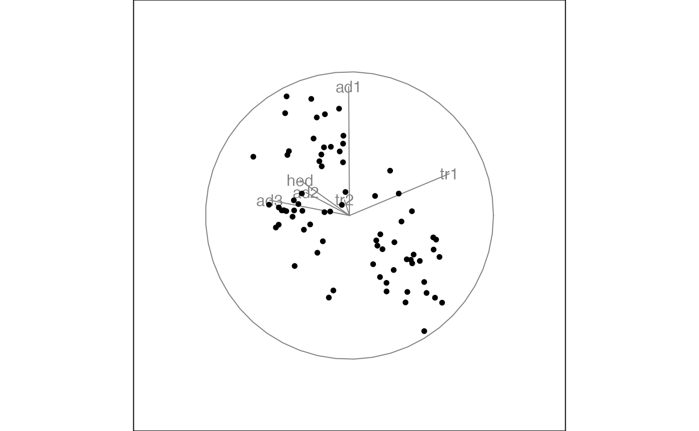
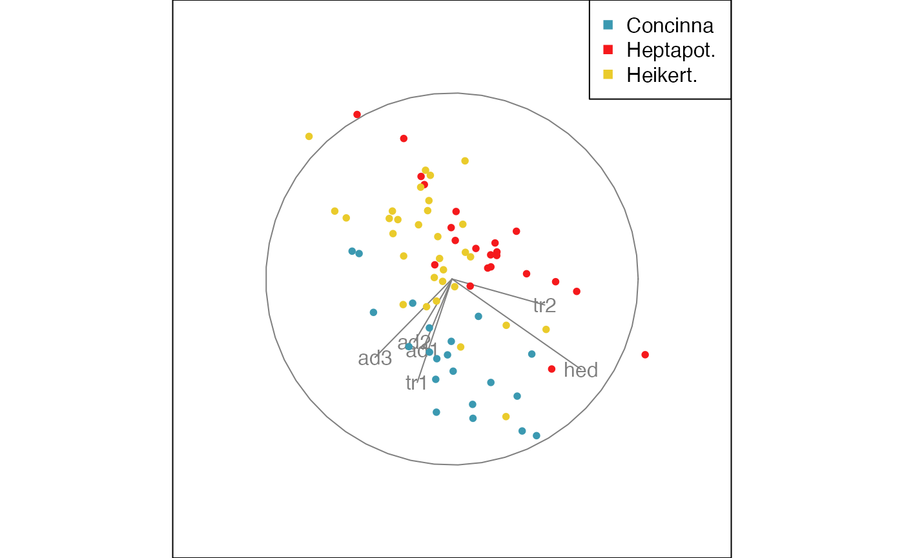
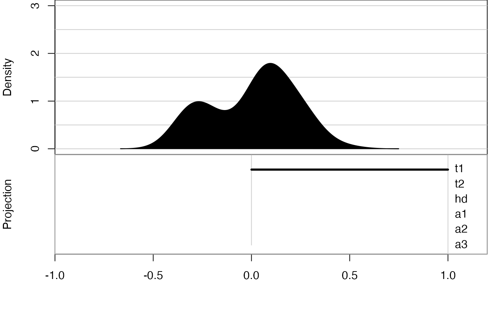
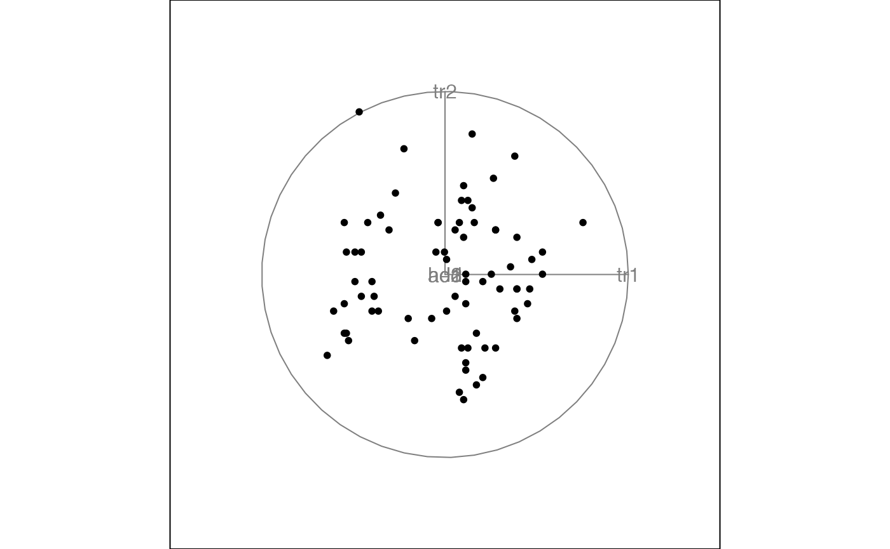

A tour animates a display of interpolated low-dimensional projections from high-dimensional data, to explore the shape of the multivariate distribution. The shape might be elliptical if the distribution is roughly normal, or there may be clusters corresponding to grouping the data according to known or unknown variables. There might be outliers, the can be identified because they are separated from the other observations, or move on different paths that other points. It may be that there are curvilinear patterns indicating nonlinear association between some variables.
This vignette shows how to use the tourr package to generate animations using different tour and display types.
library(tourr)Quick start
To get started we can simply generate a tour animation for any numeric data matrix with default settings. Here we look at the flea data available in the package, drop the last column (the grouping variable), and call
f <- flea[, 1:6]
animate(f)
#> Converting input data to the required matrix format.
#> Using half_range 0.98
Here we only see the first frame that is generated on the tour path, but if you call animate in your console you will launch a tour animation that you can view in your graphics window.
We could have also launched the same tour by specifying the default selection explicitly
animate(f,
tour_path = grand_tour(),
display = display_xy()
)
#> Converting input data to the required matrix format.
#> Using half_range 0.98
The most common application is to use a grand tour, which means that the projections (or bases) are randomly selected and give a global overview of the distribution. The default display is a two-dimensional scatterplot display.
Tour types
As we have seen, the default tour type is a grand tour. By selecting the second argument, tour_path, in the animate function we can change this, choosing from the tour types that have been implemented in the package. The most relevant options are:
- grand tour: randomly selected bases
- guided tour: basis selection is optimising an index function
- planned tour: interpolates between a set of input bases
- little tour: a planned tour between all axis parallel projections
- local tour: alternating between the starting projection and randomly selected nearby projections
For example, the guided tour can be used to move towards more interesting views of the distribution as the animation progresses. To measure the interestingness of each projection we need to define an index function which will get maximised along the tour path. You can define your own index function, or use one of those available in the tourr package. For our example flea data we can use the holes index which is looking for projections with low densities near the center, and can often find views that reveal clustering.
animate(f,
tour_path = guided_tour(holes()),
display = display_xy())
#> Converting input data to the required matrix format.
#> Value 0.839 7.6 % better - NEW BASIS
#> Using half_range 0.98
When running the full guided tour for this example, the final view shows three clusters that correspond to the three species in the dataset. By mapping the species to color we can see how the groups get teased apart in the guided tour.
animate(f,
tour_path = guided_tour(holes()),
display = display_xy(col = flea$species))
#> Converting input data to the required matrix format.
#> Value 0.502 68.2 % better - NEW BASIS
#> Using half_range 0.98
Alternatively, a colour vector can be created manually and passed into the guided tour.
# defining the color palette
clrs <- c("#486030", "#c03018", "#f0a800")
# mapping the species vector onto a color vector
flea_col <- clrs[as.numeric(flea$species)]
# the color vector specifies the color for each point
# and gets passed into the display function
animate(f,
tour_path = guided_tour(holes()),
display = display_xy(col = flea_col))
#> Converting input data to the required matrix format.
#> Value 0.707 57.5 % better - NEW BASIS
#> Using half_range 0.98Display types
The default display is showing a scatterplot of the data projected to 2D. Depending on the number of dimensions we project onto (this is called d), we can choose different display types. For example, we could look at 1D projections in a density display, a 3D projection using depth cues, or higher dimensional projections in a parallel coordinate or scatterplot matrix display.
When changing the display type via the display argument, we need to make sure that the basis generation is matching the corresponding number of dimensions d. We can pass in this infromation when generating the tour path. To work with 1D projections and a density display, we can launch the animation as
animate(f,
tour_path = grand_tour(d = 1),
display = display_dist()
)
#> Converting input data to the required matrix format.
#> Using half_range 0.98
but there is also a shortcut available
animate_dist(f)
#> Converting input data to the required matrix format.
#> Using half_range 0.98
Saving a tour
After exploring the different options, we may have identified a particularly interesting tour that we may want to save or share.
The first option is to save the animation (or its individual frames). This is possible through the render functions, that save the frame views to png or pdf format. Another option, perhaps more convenient, is to directly save the full animation to a gif file. To use the function, you will need to install the gifski package.
An advanced alternative is to save the tour path, which can later be replayed as a planned tour, and allows us to look at the same tour in different displays. For example we can save a default grand tour path for the flea data and then replay it in a scatterplot display
t1 <- save_history(f, max = 3)
#> Converting input data to the required matrix format.
animate(f, planned_tour(t1))
#> Converting input data to the required matrix format.
#> Using half_range 0.98